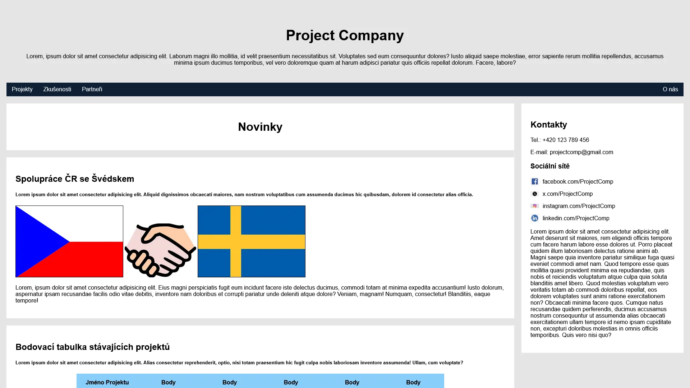
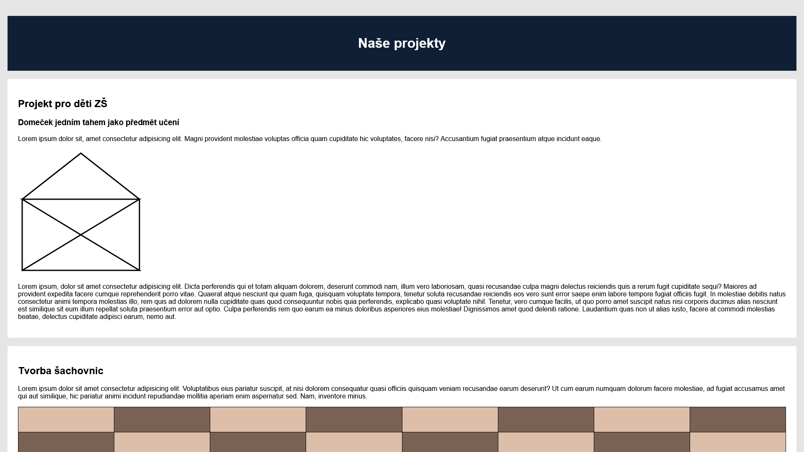
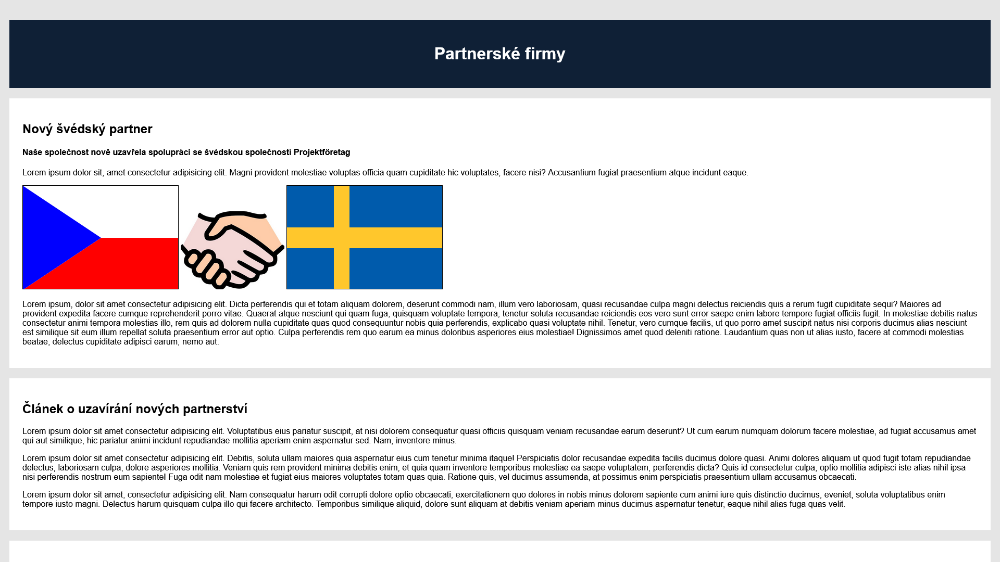
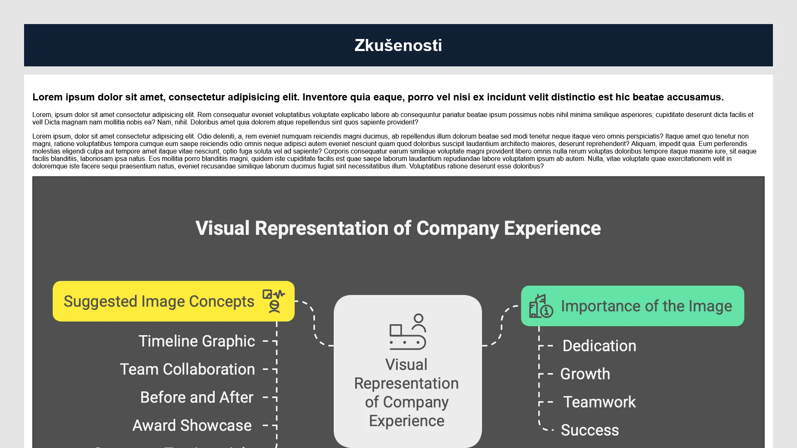
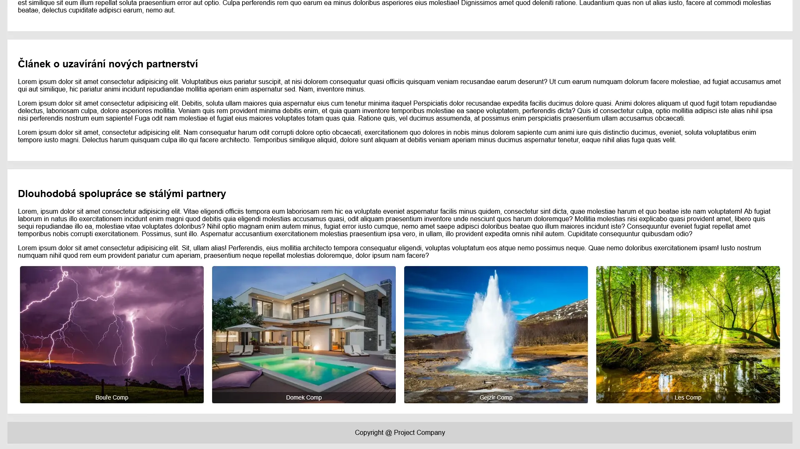

Datum
2024
Můj první web vytvořený jako projekt k zápočtu

Datum
2024
Kategorie
Vývoj Webu
Technologie
HTML, CSS, SVG
URL
Custom Project Company je vůbec první web, který jsem kdy vytvořil. Vznikl jako závěrečný projekt v předmětu Tvorba webových stránek v 1. semestru mého bakalářského studia na Univerzitě Karlově.
Cílem bylo vytvořit jednoduchý vícestránkový web dle vlastního výběru pomocí HTML & CSS se zaměřením na jasnou strukturu, funkční navigaci a jednotný vizuální styl.
Tento projekt mi dal první skutečnou zkušenost s proměnou nápadu v plně funkční web a pomohl mi pochopit klíčové principy struktury webu, rozložení a základního frontendového vývoje.




Projekt byl vytvořen s využitím základních webových technologií, jako jsou HTML, CSS a SVG. Hlavním cílem bylo vytvořit vícestránkový web s jasnou strukturou, interní navigací a konzistentním vzhledem.
Během vývoje jsem pracoval na úkolech, jako je kreslení tvarů v SVG (např. jednoduchý domeček jednou čarou nebo vlajky), stylování rozložení šachovnice pomocí CSS a propojování jednotlivých stránek do kompletního webu.
Také jsem využíval základní online zdroje jako W3Schools, Icons8 a nástroje pro výběr barevných palet, přičemž jsem občas využil i pomoc umělé inteligence při rozhodování o kódu a designu.
Jako můj úplně první skutečný webový projekt mi tato zkušenost pomohla pochopit, jak se weby staví od základu a jak v praxi spolupracují technologie HTML, CSS a SVG.
Získal jsem jistotu v psaní čistého a strukturovaného kódu, práci s navigací, propojováním stránek, vkládáním obrázků a zlepšováním vizuální hierarchie. Také jsem zkoušel prvky nad rámec zadání a hledal řešení samostatně.
Když se ohlédnu zpět, jsem na tento projekt hrdý — byl to úspěšný první krok do světa webového vývoje a pevný základ pro další růst.